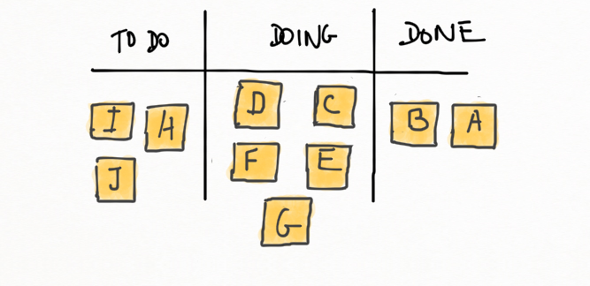
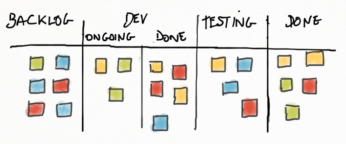
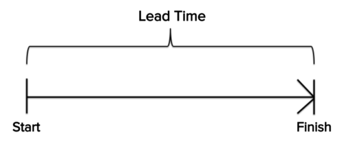
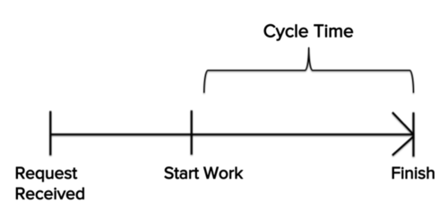
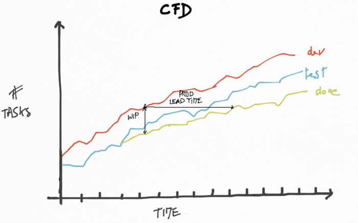
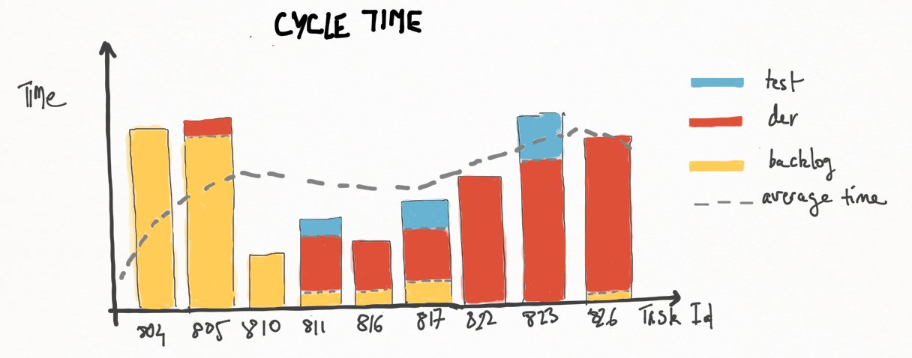
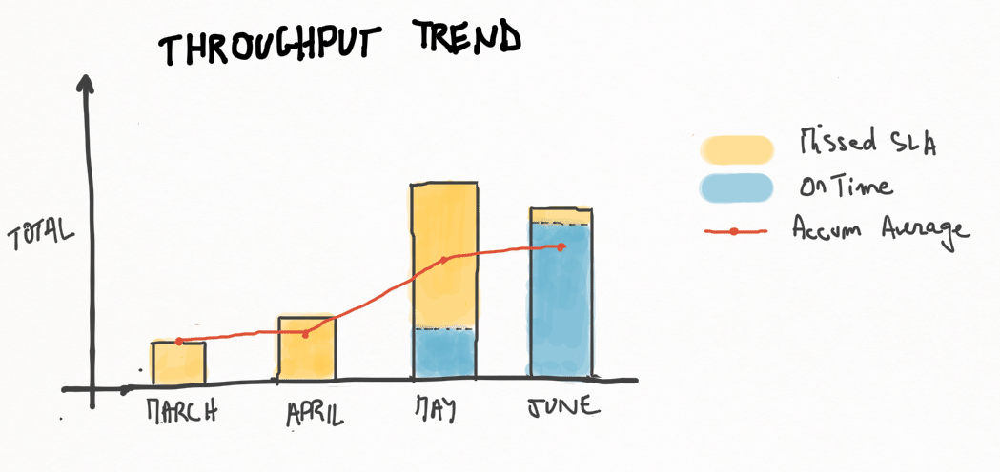

Kanban in the context of software development mean a visual process-management system that tells what to produce, when to produce it, and how much to produce - inspired by the Toyota Production System and by Lean manufacturing.
A Kanban board must be visual, tactile, collaborative.
Kanban Composants
The Kanban composants are :
- Kanban cards representing pieces of work. The cards can support various information as :
- assignee
- start time
- end time
- type of task (eg. bug vs feature vs tech debt (usually code enhancements))
- Labeled containers for the cards representing the different stages of a workflow, the life-cycle of a task/story
- Constraints
- information on the exact product or component specifications that are needed for the subsequent process step, ie. to pull task/story from column to column
- max number of cards a column can contain
Examples: A minimal Kanban board is a board with columns "To Do", "Doing", "Done":

The most popular example of kanban board for agile or lean software development consists of: Backlog, Ready, Coding, Testing, Approval and Done columns. It is also a common practice to name columns in a different way, for example: Next, In Development, Done, Customer Acceptance, Live.
An other common one is:

Possible workflow step could be chosen among the following steps:
- Backlog
- Ready/Selected
- Coding/Development
- Testing
- Acceptance/Approval
- Deployment
- Done/Live
Core Kanban Principles
- Visualize the workflow, showing the work in progress, the work remaining and showing the flow of work through the Kanban system
- Limit the Work in Progress (WiP), and then reduce the time it takes an item to travel through the Kanban system
- Manage the Flow
- Visualize blocked items, long queues, empty spaces
- Deal with indicators of problems
- Analyze the flow with metrics
- Implement Feedback Loops
- Make Process Policies Explicit
- Improve Collaboratively
The Kanban method starts with existing roles and process and stimulates continuous, incremental and evolutionary change in the system by monitoring, adapting and improving the workflow, by measuring effectiveness by tracking flow, quality, throughput, lead times.
Kanban Metrics
First some definitions to understand Kanban Metrics.
Lead Time : The time it takes a work to get from step A to step B.

There can be several lead times (e.g., customer lead time, development lead time, QA lead time, etc.) and specially the End to end Lead Time : The time in which a card goes from being created to being closed.
This metric say about how the whole organization or product team (not only a development team) reacts to customer's needs.
Delivery/Cycle Lead Time : The time a card spend out of the backlog, ie. the elapsed time from the moment the team starts actively working on a task till the moment they are done.
This metric basically say about how responsive the team is or how fast they can deliver something when priorities change.

Different teams will use different definitions for start and done ("accepted by the product owner" vs "delivered to production").
Cumulative Flow Diagrams
This report represents the relative amount of work for each stage of project over the time. The key data points of the CFD are:
- The vertical distance between each area represents the amount of work in progress on the respective stage in a specific date
- The horizontal distance between the areas in the chart corresponds to the average lead time of the requests that arrived on a specific date
- The mean delivery rate, represented by the slope of the closed items area, corresponds to the trend in the delivery of the work.
This metric help understand the state of current work and what might need to be done to speed up the pace of delivery.
The diagram should run smoothly. Large steps and flat horizontal lines indicate impediments to flow or lack of flow. Variations in the gap or bands stand for bottleneck situations, which usually occur due to irrelevant work in progress limits.

Lead Time Average
This report shows a trend of the average number of days a task took to be completed, from start to finish. It is categorized by work item type so teams can see the how the system is performing over time, broken down by work item type.
Flow Efficiency
This report shows the average percentage of lead time that a developer spent working on a task (touch time). This shows the potential for process improvements.
Cycle time diagram
Stacked bar chart representing how much time a task has spent in a given state through is life-cycle, allowing the detection of tasks that are taking too long.

Due Date Performance
This report shows the percentage of items that were delivered on time and the average percentage delivery rate over time. This is useful for illustrating how predictable the system is. Due date performance with a low percentage provides evidence that there is an abundance of variability in the flow. The team should take corrective action or they will not be able to establish reasonable service agreements.
Bugs per Story
This report shows a trend of the average number of defects opened against a Story. Attaining predictability is a fundamental aspect in the Kanban system, however, that will be ineffective if the software is delivered with low quality. This chart is also useful when implementing Kanban to help teams establish goals in the quality area.
Lead Time Distribution
This report is a statistical distribution that shows the number of occurrences by lead time. It is an effective way to identify discrepancies in the process and boosts the confidence of teams in the definition of service level agreements, based on real life data.
Throughput Trend
This report shows the number of items that were delivered in a given time period (eg monthly). It can be used to identify a trend of how well the system has been performing. As teams work on process improvements, the throughput trend will show a more consistent slope in the chart.

Sources:
Kanban from the Inside: 20. Model workflow
Kanban Story
Kanban Metrics: Measure Cycle Time To Stay Lean
7 LEAN METRICS TO IMPROVE FLOW
Improve predictability and efficiency with Kanban metrics using IBM Rational Insight
A brief introduction to kanban
Cumulative Flow Diagram
Stack Exchange : What are commonly tracked metrics in kanban?
Kanban Analytics part II: Cycle Time
Agile Rambling - Tag Archives: metrics